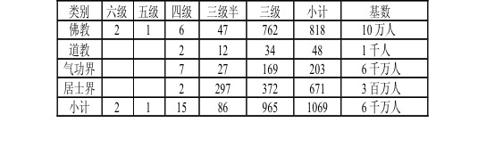

第六篇 皈依佛门
第七十八集 修行之路
人们无论是修行、修炼，无论从何法门、何宗何派，还是何门气功，总是不愿稀里糊涂地苦修苦行，尤其对于现代人，总要知道个结果，知道自己修到什么程度、地步了，下一步应向何方向去努力？一方面，实修时要"只管耕耘，不管结果，不问收获"，这是实修时的一种方法，以免分心生烦恼，但是人都是有思维的，今人更不是古人那样古朴，总要问个为什么？
另一方面修行中的很多问题是说不清、讲不明的，很多事情只有修到那一步，证悟到那一步了，也就明白那一步了，再往上，仍是说不清，仍须去实修证悟。
现就佛门的观点而论，将修行、修炼分为十二个等级，或说十二地。
一级（一地）极喜地（相当于平等地），知道了生命具有永恒性，而能持戒练功修行，修行虽清苦，但自觉要比世间的一切更为欢喜，此为不静自静，心平气和，心净如月。
二级（二地）离垢地（相当于善慧地），心境能远离世间，大戒（根本戒即不杀生、不淫、不盗、不妄语等）能持，但有细微犯戒，此时心已能入静。
三级（三地）发光地（相当于光明地），能持咒修行，初定中有分散的光点出现（在天目），或有淡淡的光环、光云出现。
四级（四地）焰慧地（相当于尔焰地），能够主动了断烦恼，由定生慧，光点似火。
五级（五地）极难胜地（慧照地），从四至五的修炼是最艰难，这个极差极大，故佛门称五级为极难胜地。此级中，人在大定中，天目及脑中呈现一片光的海洋，此时会出现较大的神通。
按道门分法，此为人仙级，四级相当于鬼仙级，就目前出山的气功大师而言，尚未发现有五级者，如严新等最著名的气功大师仅为四级。道门中四级者有两人，在社会上已出山的气功大师中，至今仍保持在四级的共有七人。
就佛门而言，内地的僧众中，大德往往处在二级。在四川大邑县一密宗高僧为四级，青海塔尔寺密宗高僧中有四级两人，在康藏密宗中有六级喇嘛两人，四级三人，五级一人。
如此，就中国大陆而言，在十二亿人口之中，出山、未出山四级以上者总计只有十八人，这些人是人中之宝，无论国家、社会均应予以爱护。
从十八人对十二亿人而言，可以看出修行之不易，之艰难。
在气功界，达三级半的气功大师已达二十七人。在内地佛门中，密宗里达三级半九人，青海塔儿寺密宗有四人达三级半，康藏喇嘛中，三级半者有三十四人。道门中三级半者十二人。共计八十六人。
气功界达三级水平的有一百六十九人。内地佛门有三百二十八人，其中显宗僧人一百九十七人，密宗一百三十一人，青海塔儿寺三级僧十二人，康藏喇嘛三级者四百二十二人。道门三级者三十四人。共计九百六十五人。
兹列表统计如下： 
从以上表中分析，可以得出什么结论。
一、十二亿人口中，成功者仅为一千零六十九人，约占百万分之八点四——八点五，占全部修炼人的六万分之一，其中佛门成功率为千分之七点六二，道门为千分之三点四，气功界为千分之零点零零三四，而佛门中藏密的成功率大于显宗。
二、佛门倡导普渡众生，故不应排斥修学气功的人，而应介入气功，开方便之门。去渡这些有根基的习功者。
三、可以看出气功界之所以时而高潮时而低落，主要原因是传法不利，成功率偏低，一阵阵通过电视节目把人的热情、幻想激起，但成功者极少，不能怪群众会冷落下去。
四、佛门成功率虽较高，但偏重在藏密，而真正的藏密，内地人是无法学到的。之所以叫密，就是密而不传，传出的仅仅是皮毛，已不能称之为密了。
五、从表中也可看出气功界的成绩，通过十多年的人海战术，毕竟出来了一百六十九位有成绩者，占有成者的百分之十九。
六、如果按另一种方法去统计，气功界的六千万大军中，比较认真修炼的有二百四十万人，以此为基数，成功率
占千分之零点八，这样就远远大于千分之零点零零三四。
七、是否可以得出这样一个结论，气功界的门派繁多，真正想有成者，必须借助、研究数千年来佛、道的修行方
法，总结古人修行的经验，否则只能在低层次打转。
气功界若真想不辜负六千万气功大军的重托，就必须敢于闯入禁区，去探幽佛门、道门、神门、巫门的真谛，否则就总会徘徊在气场上、信息上而止步不前。下面接上文谈分级：
六级（六地）现前地（华光地），时刻溶于光的海洋之中，找不到自己的存在，道门称之为地仙级，凡世人已很难有机会看到这种人了。
七级（七地）远行地（满足地），佛门称修到此等级者为罗汉，道门称此等级者为神仙。即在光的海洋中又找回了自己。
八级（八地）不动地（佛吼地），不为烦恼所动，其智已如佛，其人已入法王位。此在道门谓之天仙位。
九级（九地）善慧地（华严地），说法自在，如佛威仪，具如来自在王位，此位已进入宙心边缘，佛门已称之为佛，神门称之为天尊。
第三代天皇玄龙大帝尚居此位。
十级（十地）法云地（佛界地），广大圆满，此位也称圣观音位。
十一级（十一地）佛地，也称释迦牟尼佛位，阿弥陀佛位。
十二级（十二地）宙心，大日如来位。
第一代天皇即天王母后（妈祖）之父身居辟支佛位，处十一地；天王母后也居佛地位，九天玄女已居圣观音位，即十地；道门三清已居十一地（佛地）；观音已居十一地（佛地）；碧霞元君已居九地；在道观和佛寺中，常有关帝塑像，广东人也家家供关帝，此位关帝已居七地即罗汉位。
如今凡世人有不少已修至三级、四级，距七级罗汉位仅差三、四级，但此三、四级并非一世之功，只有一世一世的修下去，方可成功。
由此也可看出，观音代表佛门功法；三清代表道门功法；天王母后（妈祖）、九天玄女、玄龙大帝代表神门功法都是可以修上去的。最终的结果只有一个，通往宙心。
气功大师严新之所以只做报告而不传弟子，其原因有二：一是只能传些普及功，做做报告就可以了，若真办弟子班也是教不上去，误人子弟；二是若要提高必涉嫌禁区"佛、神、道"，而此问题在社会上又无法解决，只好试图从现代科技上闯出一条能够解释的说法。其他气功大师也会遇到如此的问题，在"佛、神、道"面前束手无策，承认它存在也不好，不承认它存在也不好。大多人是给佛起个别名，称之为高空师父，隐态师父，信息体，残余信息能量体等等。一方面承认这种生命现象存在，一方面又不敢如古人那样直呼其名。
目前，气功就卡在这上面了，六千万气功大军按兵不动，止步不前，一心盼望科技界是否能用英文名词来给个什么解释。
但天上有的是耐心，依然低昂似旧，低低地就和着人类，人间儿女再是成狂也不过是百年时光，转眼即逝，而天上有的是时间却从海底跨枯桑，阅尽银河风浪……
佛门的那些高僧大德在不住地疾呼，要勇猛精进，抓紧修行；道门的隐士远离社会默默地苦行；而凡世间的人在两极分化，一部分人追求物质文明，沉醉于灯红酒绿，一部分人开始踏上修行之路。
修行之路艰难，因为是逆天河潮流而上，修行之路漫长，因天河无边无际的伸展。而如今的修行人，并非是一世之行了，而且仍需一世一世的走下去。